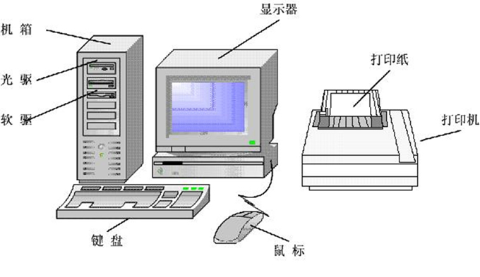
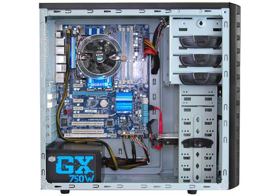
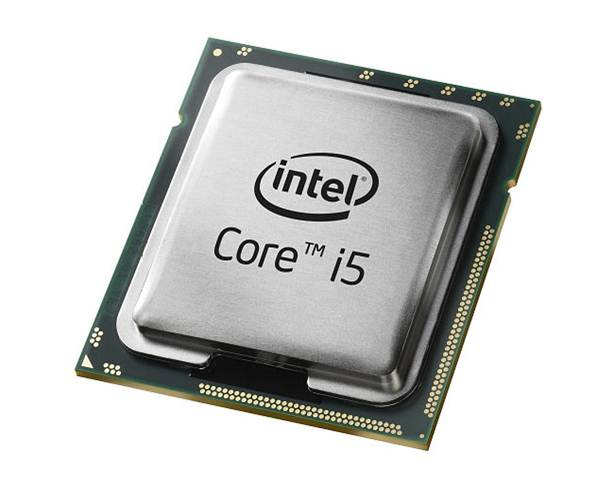
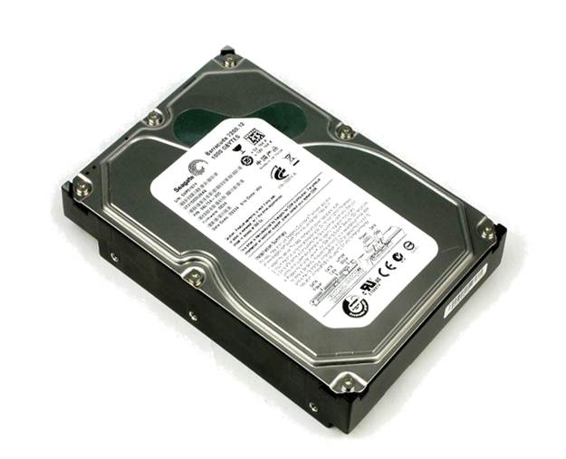

任务一：一台完整的计算机的图片展示

任务二：电脑主机的组成
一台电脑是由许许多多的零部件组成，只有这些零部件组合在一起协调的工作，才能称之为电脑。电脑发展到现在，其零部件都有了很大的变化，但其工作原理却没有变，其中包括主板、CPU、内存、硬盘、显卡、声卡等等。下面将简单的介绍组成电脑的各个零部件。
任务三：电脑机箱
“gi

任务四：CPU（中央处理器）
功能：也就是负责运算和控制的控制中心，是电脑的最关键部位，是计算机的头脑 作用：相当于人的大脑一样，在计算机中进行的任何操作（数据的输入，存储，程序的运行，屏幕的显示，结果的打印）都在CPU的控制下完成的。CPU比计算机中任何部件都更能决定计算机的工作速度和效率。
“gi

任务五：硬盘
功能：硬盘是我们熟知的电脑配件之一，简单的说就是一个大容量存储器，与主机通讯速度很快，成为现代电脑不可缺少的配件。 作用：由于计算机在工作时CPU，输人输出设备与存储器这间要大量地交换数据，因此存储器的存处速度和容量，也是影响计算机运行速度的主要因素之一。
“gi
